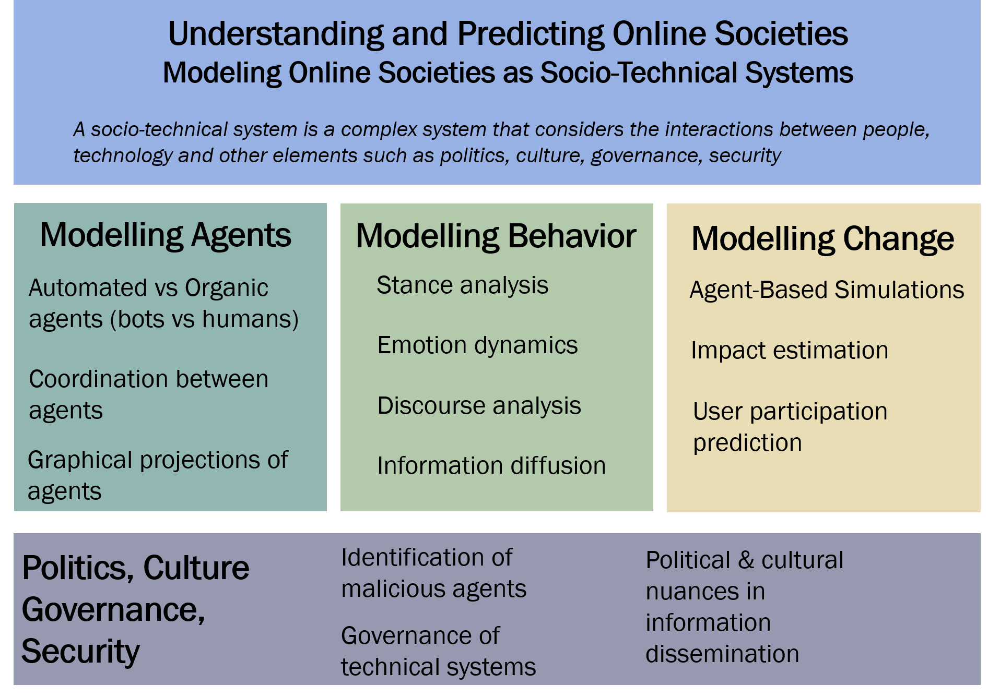

Research
Broadly, I work in computational social sciences on social media. The following image summarizes my research thrusts. Work published related to each theme is listed below.

Modeling Agents
Automated vs Organic Agents (bots vs humans)
- BotBuster Universe Project Page
- Ng, Lynnette Hui Xian, and Kathleen M. Carley. "Botbuster: Multi-platform bot detection using a mixture of experts." In Proceedings of the international AAAI conference on web and social media, vol. 17, pp. 686-697. 2023.
- Ng, Lynnette Hui Xian, Dawn C. Robertson, and Kathleen M. Carley. "Stabilizing a supervised bot detection algorithm: How much data is needed for consistent predictions?." Online Social Networks and Media 28 (2022): 100198.
- Ng, Lynnette Hui Xian, Dawn C. Robertson, and Kathleen M. Carley. "Cyborgs for strategic communication on social media." Big Data & Society 11, no. 1 (2024): 20539517241231275.
Coordination between agents
- Ng, Lynnette Hui Xian, Ian Kloo, Samantha Clark, and Kathleen M. Carley. "An exploratory analysis of COVID bot vs human disinformation dissemination stemming from the Disinformation Dozen on Telegram." Journal of Computational Social Science (2024): 1-26.
- Ng, Lynnette Hui Xian, and Kathleen M. Carley. "Assembling a multi-platform ensemble social bot detector with applications to US 2020 elections." Social Network Analysis and Mining 14, no. 1 (2024): 45.
- Ng, Lynnette Hui Xian, Samantha C. Phillips, and Kathleen M. Carley. "SMI-5: Five Dimensions of Social Media Interaction for Platform (De) Centralization." arXiv preprint arXiv:2404.15509 (2024).
- Ng, Lynnette Hui Xian, Iain J. Cruickshank, and Kathleen M. Carley. "Coordinating Narratives Framework for cross-platform analysis in the 2021 US Capitol riots." Computational and Mathematical Organization Theory 29, no. 3 (2023): 470-486.
- Ng, Lynnette Hui Xian, and Kathleen M. Carley. "Online coordination: methods and comparative case studies of coordinated groups across four events in the united states." In Proceedings of the 14th ACM Web Science Conference 2022, pp. 12-21. 2022.
- Ng, Lynnette Hui Xian, J. D. Moffitt, and Kathleen M. Carley. "Coordinated through aweb of images: Analysis of image-based influence operations from china, iran, russia, and venezuela." arXiv preprint arXiv:2206.03576 (2022).
- Magelinski, Thomas, Lynnette Ng, and Kathleen Carley. "A Synchronized Action Framework for Detection of Coordination on Social Media." Journal of Online Trust and Safety 1, no. 2 (2022).
- Ng, Lynnette Hui Xian, and Kathleen M. Carley. "A combined synchronization index for evaluating collective action social media." Applied network science 8, no. 1 (2023): 1.
Graphical projection of agents
- Lim, Adrian Xuan Wei, Lynnette Hui Xian Ng, Nicholas Kyger, Tomo Michigami, and Faraz Baghernezhad. "Projecting Radiance Fields to Mesh Surfaces." In ACM SIGGRAPH 2024 Posters, pp. 1-2. 2024.
- Lim, Adrian Xuan Wei, Lynnette Hui Xian Ng, Conor Griffin, Nicholas Kryer, and Faraz Baghernezhad. "Reverse Projection: Real-Time Local Space Texture Mapping." In ACM SIGGRAPH 2023 Posters, pp. 1-2. 2023.
- Lu, Xiaopeng, Lynnette Ng, Jared Fernandez, and Hao Zhu. "CIGLI: Conditional image generation from language & image." In Proceedings of the IEEE/CVF International Conference on Computer Vision, pp. 3134-3138. 2021.
Modeling Behavior
Stance analysis
- Ng, Lynnette Hui Xian, and Kathleen M. Carley. "Is my stance the same as your stance? A cross validation study of stance detection datasets." Information Processing & Management 59, no. 6 (2022): 103070.
- Cruickshank, Iain J., and Lynnette Hui Xian Ng. "Use of large language models for stance classification." arXiv preprint arXiv:2309.13734 (2023).
- Ng, Lynnette Hui Xian, Iain Cruickshank, and Roy Ka-Wei Lee. "Examining the Influence of Political Bias on Large Language Model Performance in Stance Classification." arXiv preprint arXiv:2407.17688 (2024).
- Ng, Hui Xian Lynnette, Roy Ka-Wei Lee, and Md Rabiul Awal. "I miss you babe: Analyzing emotion dynamics during COVID-19 pandemic." In Proceedings of the fourth workshop on natural language processing and computational social science, pp. 41-49. 2020.
Emotion dynamics
- Ng, Lynnette Hui Xian, and Jia Yuan Loke. "Analyzing public opinion and misinformation in a COVID-19 telegram group chat." IEEE Internet Computing 25, no. 2 (2020): 84-91.
- Ng, Lynnette Hui Xian, and Kathleen M. Carley. "Bot-based emotion behavior differences in images during Kashmir black day event." In International Conference on Social Computing, Behavioral-Cultural Modeling and Prediction and Behavior Representation in Modeling and Simulation, pp. 184-194. Cham: Springer International Publishing, 2021.
- Ng, Lynnette Hui Xian, Adrian Xuan Wei Lim, and Roy Ka-Wei Lee. "Love-Hate Dataset: A Multi-Modal Multi-Platform Dataset Depicting Emotions in the 2023 Israel-Hamas War." In Companion Proceedings of the ACM on Web Conference 2024, pp. 1807-1815. 2024.
Discourse analysis
- Jaidka, Kokil, Hansin Ahuja, and Lynnette Hui Xian Ng. "It Takes Two to Negotiate: Modeling Social Exchange in Online Multiplayer Games." Proceedings of the ACM on Human-Computer Interaction 8, no. CSCW1 (2024): 1-22.
- Marigliano, Rebecca, Lynnette Hui Xian Ng, and Kathleen M. Carley. "Analyzing Digital Propaganda and Conflict Rhetoric: A Study on Russia’s Bot-Driven Campaigns and Counter-Narratives during the Ukraine Crisis." (2024).
Information diffusion
Modeling Change
Agent-Based simulations
- Ng, Lynnette Hui Xian, and Kathleen M. Carley. "Pro or anti? A social influence model of online stance flipping." IEEE Transactions on Network Science and Engineering 10, no. 1 (2022): 3-19.
- Salazar-Serna, Kathleen, Lynnette Hui Xian Ng, Kathleen Carley, Lorena Cadavid, and Carlos Jaime Franco. "Simulating the social influence in transport mode choices." In 2023 Winter Simulation Conference (WSC), pp. 3154-3165. IEEE, 2023.
- Carragher, Peter, Lynnette Hui Xian Ng, and Kathleen M. Carley. "Simulation of Stance Perturbations." In International Conference on Social Computing, Behavioral-Cultural Modeling and Prediction and Behavior Representation in Modeling and Simulation, pp. 159-168. Cham: Springer Nature Switzerland, 2023.
Impact estimation
- Ng, Lynnette Hui Xian, Wenqi Zhou, and Kathleen M. Carley. "Exploring Cognitive Bias Triggers in COVID-19 Misinformation Tweets: A Bot vs. Human Perspective." arXiv preprint arXiv:2406.07293 (2024).
User participation prediction
- Ng, Lynnette Hui Xian, John Yeh Han Tan, Darryl Jing Heng Tan, and Roy Ka-Wei Lee. "Will you dance to the challenge? predicting user participation of TikTok challenges." In Proceedings of the 2021 IEEE/ACM International Conference on Advances in Social Networks Analysis and Mining, pp. 356-360. 2021.
Politics, Culture, Governance, Security
Governance of technical systems
- Ng, Lynnette HX, and Araz Taeihagh. "How does fake news spread? Understanding pathways of disinformation spread through APIs." Policy & Internet 13, no. 4 (2021): 560-585.
- Ng, Lynnette Hui Xian, Adrian Xuan Wei Lim, and Michael Miller Yoder. "Challenges for Real-Time Toxicity Detection in Online Games." arXiv preprint arXiv:2407.04383 (2024).
- Ng, Lynnette HX, Abigail CM Lim, Adrian XW Lim, and Araz Taeihagh. "Digital Ethics for Biometric Applications in a Smart City." Digital Government: Research and Practice 4, no. 4 (2023): 1-6.
Identification of malicious agents
- Phillips, Samantha C., Lynnette Hui Xian Ng, and Kathleen M. Carley. "Blended Bots: Infiltration through Identity Deception on Social Media." arXiv preprint arXiv:2406.05246 (2024).
Political & cultural nuances in information dissemination
- Yoder, Michael, Lynnette Ng, David West Brown, and Kathleen M. Carley. "How Hate Speech Varies by Target Identity: A Computational Analysis." In Proceedings of the 26th Conference on Computational Natural Language Learning (CoNLL), pp. 27-39. 2022.
- Lepird, Christine Sowa, Lynnette Hui Xian Ng, Anna Wu, and Kathleen M. Carley. "What News Is Shared Where and How: A Multi-Platform Analysis of News Shared During the 2022 US Midterm Elections." Social Media+ Society 10, no. 2 (2024): 20563051241245950.